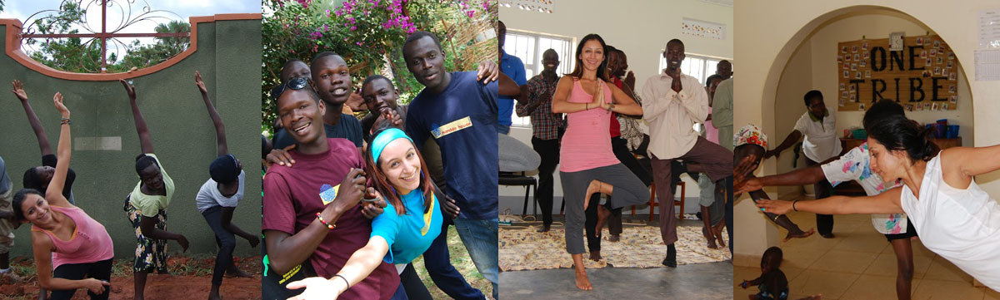

I have traveled the world studying gender roles in diverse cultures. Gender based violence against women is unfortunately a common thread. How can we rectify this situation? I believe it is by empowering women through helping everyone learn to honor the divine feminine. By understanding your own relationship to power you will learn to love yourself. You will unlearn the myriad lessons about what a woman Should and Should not do. Then you can make choices to embody your unique expression of a strong woman!
Workshops
I facilitate workshops for Conscious Connection. We integrate intimacy games with
partners to explore the experience of seeing and being seen. We practice mindful
yoga to learn about the internal experience of living in a body. We share our truths
and learn from one another. We witness and hold space for one another. We connect
from our hearts and understand the way we all reflect each other.
Trauma Healing Workshop for Women Survivors of Violence
Divine Feminine
Women have been intentionally opressed for the past few thousand years. In the last one hundred, women have begun to transform their role on this planet. The messages about our abilities and worth continue to be informed by an unequal paradigm. I work to help women understand the gender dynamics of today's culture. By noticing the ways in which women are systematically affected we can then work to identify the internal reactions to these norms. What is your relationship to your own femininity? and your masculinity as well? What does it mean to be a woman? What kind of woman do you want to be? What role do you play in relationships based on your gender?I have traveled the world studying gender roles in diverse cultures. Gender based violence against women is unfortunately a common thread. How can we rectify this situation? I believe it is by empowering women through helping everyone learn to honor the divine feminine. By understanding your own relationship to power you will learn to love yourself. You will unlearn the myriad lessons about what a woman Should and Should not do. Then you can make choices to embody your unique expression of a strong woman!